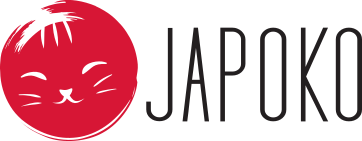

| PASKUTINIS SUGRĮŽIMO PRIMINIMAS ● 72 VAL. | ||||||
JEIGU DAR GALVOJATE… ŠTAI MAŽA PRIEŽASTIS SUGRĮŽTI DABAR Jūsų pamėgti japoniški atradimai vis dar čia. O šįkart prie jų norėjau pridėti ir mažą asmeninę sugrįžimo dovaną. | ||||||
 | ||||||
METODIJOS ATRANKA ATRINKTA NE VIENAI DIENAI Daugiau nei 10 metų JAPOKO atrenka Japonijoje sukurtus daiktus, kuriuose svarbi ne tik išvaizda, bet ir funkcija, patogumas bei kokybė, jaučiama naudojant kasdien. | ||||||
| ||||||
| ||||||
PASIRINKITE SAVO ATRADIMĄ KUR NORĖTUMĖTE SUGRĮŽTI? | ||||||
| ||||||
KODAS LAUKS 72 VALANDAS KĄ ATRASITE ŠĮKART?
| ||||||
 | ||||||
| MB „Creator Japonicus“ · Bajorų g. 9, Migūnai, Vilniaus raj., LT-13243, Lietuva japoko.com · info@japoko.com Šį laišką gavote, nes anksčiau pirkote JAPOKO parduotuvėje. Atsisakyti naujienlaiškio |